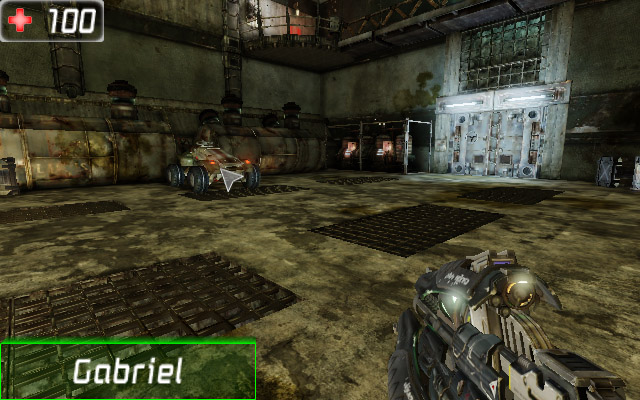
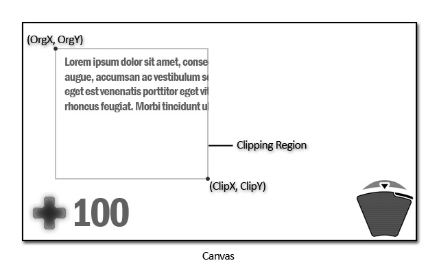
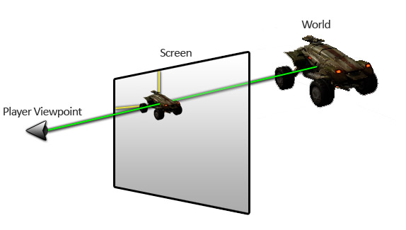
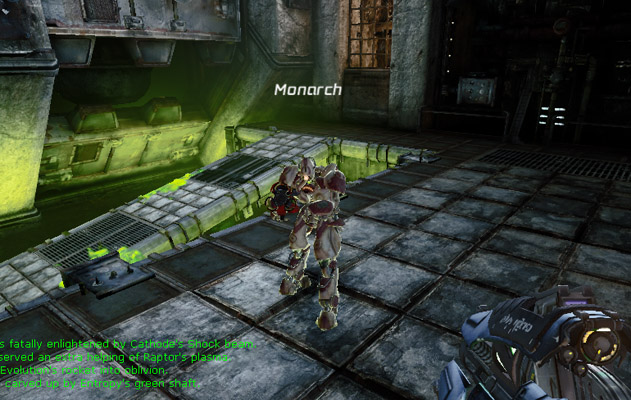

UDN
Search public documentation:
CanvasTechnicalGuideCH
English Translation
日本語訳
한국어
Interested in the Unreal Engine?
Visit the Unreal Technology site.
Looking for jobs and company info?
Check out the Epic games site.
Questions about support via UDN?
Contact the UDN Staff
日本語訳
한국어
Interested in the Unreal Engine?
Visit the Unreal Technology site.
Looking for jobs and company info?
Check out the Epic games site.
Questions about support via UDN?
Contact the UDN Staff
UE3 主页 > 用户界面 & HUD > 画布技术指南
画布技术指南
概述

有一些特殊的函数用于把类似于图像、材质、形状和文本的元素描画到屏幕上。通过把这些元素组合到一起，就能创建出一个连贯的、吸引人的并且提供很多信息的界面。当然，Canvas类的用途不仅是描画界面和HUD。它也用于其它需要进行描画的地方，比如ScriptedTextures(脚本贴图)。在任何情况下,无论在哪里使用Canvas类进行描画，基本的概念是一样的。Canvas类
Canvas(画布)属性
Drawing(描画)- DrawColor(描画颜色) - 描画所使用的颜色。将用于文本。
- Font(字体) - 描画文本所使用的字体。
- DefaultTexture(默认贴图) - 用于描画基于贴图的元素所使用的默认贴图，没有指定可选的贴图参数。
- Org[X/Y] - 当前剪辑区域的水平和垂直原点。
- Clip[X/Y] -当前剪辑区域的右下角。
- Cur[X/Y/Z] - 要描画到的当前位置。
- CurYL - 自从上一次调用
DrawText()函数后所描画的任何元素的最大垂直尺寸。 - Size[X/Y] -描画Canvas的视口的真正的水平和垂直维度。
- bCenter - 如果为真，文本将会居中描画。
- bNoSmooth - 如果为真，那么将会对要描画到Canvas上的元素应用双线性过滤。
画布函数
一般- Reset [bKeepOrigin] - 这是引擎调用的事件，每次更新时重新设置Canvas的属性。
- bKeeporigin - 如果为真，将重新设置
OrgX和OrgY属性。
- bKeeporigin - 如果为真，将重新设置
- SetPos [PosX] [PosY] [PosZ] - 设置画布的当前描画位置。
- Pos[X/Y/Z] - 要进行描画的地方的水平和垂直位置。Z默认为1.0，当调用这个函数时通常会被忽略。
- SetOrigin [X] [Y] - 设置画布的剪辑区域的原点。
- [X/Y] - 水平和垂直位置，以像素为单位。
- SetClip [X] [Y] - 设置画布的剪辑区域的左下角的位置。
- [X/Y] - 水平和垂直位置，以像素为单位。
- SetDrawColor [R] [G] [B] [A] - 创建使用给定值的一个颜色，并设置Canvas的
DrawColor。- [R/G/B/A] - 红、绿、蓝和透明度值。
- SetDrawColorStruct [C] - 设置画布的
DrawColor使用给定颜色。- C - 要使用的颜色。
- MakeIcon [Texture] [U] [V] [UL] [VL] - 创建并返回一个使用给定贴图的新CanvasIcon(画布图标)。
- Texture - 从中抽取图标的贴图。
- [U/V] - 要使用的贴图部分的左上角的水平位置和垂直位置。这个值以贴图像素为单位。
- [UL/VL] - 要使用的贴图部分的宽度和高度。这个值以贴图像素为单位。
- DrawIcon [Icon] [X] [Y] [Scale] - 在给定的位置以给定的比例描画CanvasIcon（画布图标）。
- Icon - 要描画的CanvasIcon。
- [X/Y] - 在屏幕上描画图标的水平和垂直位置，以像素为单位。
- Scale - 应用到图标上的比例。
- DrawRect [RectX] [RectY] [Tex] - 使用当前的
DrawColor(描画颜色)在当前的描画位置描画一个特定尺寸的填充长方形。- Rect[X/Y] - 要描画的长方形的宽度和高度。
- Tex - 可选。填充长方形所使用的贴图。默认为画布的DefaultTexture（默认贴图）。
- DrawBox [width] [height] - 在当前描画画布的位置处描画一个具有给定大小的2个像素宽的边界长方形。
- width - 要描画的方框的宽度。
- height - 要描画的方框的高度。
- Draw2DLine [X1] [Y1] [X2] [Y2] [LineColor] - 在屏幕上描画一条直线。
- [X/Y]1 - 描画直线开始处的水平和垂直位置，以像素为单位。
- [X/Y]2 - 描画直线结束处的是水平和垂直位置。
- LineColor - 用于描画直线的颜色。
- DrawTextureLine [StartPoint] [EndPoint] [Perc] [Width] [LineColor] [LineTexture] [U] [V] [UL] [VL] - 使用旋转、贴图平铺块来描画一条2D直线。
- StartPoint - 描画直线的起始点。这是一个向量，X和T分量包含了屏幕空间像素坐标。
- EndPoint - 描画直线的结束点。这是一个向量，X和T分量包含了屏幕空间像素坐标。
- Perc - 要描画的直线的量。这个值是由
EndPoint减去StartPoint的整体距离来获得的，决定了描画的直线的长度。渲染的直线将总是以StartPoint到EndPoint的中点为中心。 - Width - 每条直线的宽度，以像素为单位。
- LineColor - 描画第一条直线所使用的颜色。
- Tex - 描画直线所使用的贴图。
- [U/V] - 要使用的贴图部分的左上角的水平位置和垂直位置。这个值以贴图像素为单位。
- [UL/VL] - 要使用的贴图部分的宽度和高度。这个值以贴图像素为单位。
- DrawTextureDoubleLine [StartPoint] [EndPoint] [Perc] [Spacing] [Width] [LineColor] [AltLineColor] [Tex] [U] [V] [UL] [VL] - 使用旋转、贴图平铺块来描画一条2D直线。
- StartPoint - 描画直线的起始点。这是一个向量，X和T分量包含了屏幕空间像素坐标。
- EndPoint - 描画直线的结束点。这是一个向量，X和T分量包含了屏幕空间像素坐标。
- Perc - 要描画的直线的量。这个值是由
EndPoint减去StartPoint的整体距离来获得的，决定了描画的直线的长度。渲染的直线将总是以StartPoint到EndPoint的中点为中心。 - Spacing - 两条直线之间的像素的数量。
- Width - 每条直线的宽度，以像素为单位。
- LineColor - 描画第一条直线所使用的颜色。
- AltLineColor - 描画第二条直线所使用的颜色。
- Tex - 描画直线所使用的贴图。
- [U/V] - 要使用的贴图部分的左上角的水平位置和垂直位置。这个值以贴图像素为单位。
- [UL/VL] - 要使用的贴图部分的宽度和高度。这个值以贴图像素为单位。
- DrawDebugGraph [Title] [ValueX] [ValueY] [UL_X] [UL_Y] [W] [H] [RangeX] [RangeY] - 描画一个比较两个值的图表。用于可视化的调试和调整。
- Title - 描画在图表上的标签, 如果没有标签则描画“”。
- Value[X/Y] - 位于图表的水平轴和垂直轴上的点的值。
- UL_[X/Y] - 屏幕上图标左上角的水平位置和垂直位置，以像素为单位。
- [W/H] - 图表的宽度及高度，以像素为单位。
- Range[X/Y] - 在图表上显示的水平轴和垂直轴的值的范围。
- CreateFontRenderInfo [bClipText] [bEnableShadow] [GlowColor] [GlowOuterRadius] [GlowInnerRadius] -创建并返回一个具有给定属性的新FontRenderInfo。
- bClipText - 如果为True，那么描画的具有这个FontRenderInfo文本将会被剪辑掉。
- bEnableShadow - 如果为True，那么描画的具有这个FontRenderInfo的文本将会被阴影化。
- GlowColor - 描画闪光文本所使用的基本颜色。
- GlowOuterRadius - 这是指出闪光轮廓的外部半径的Vector2D (0到1之间，0.5是角色轮廓的边缘)，闪光影响强度在GlowOuterRadius.X处是0，在GlowOuterRadius.Y处是1。
- GlowInnerRadius - 这是指出闪光轮廓的内部半径的Vector2D (0到1之间，0.5是角色轮廓的边缘)，闪光影响强度在GlowOuterRadius.X处是0，在GlowOuterRadius.Y处是1。
- StrLen [String] [XL] [YL] - 计算给定字符串的水平和垂直大小。这考虑了文本自动换行的情形。
- String - 要获取其尺寸的文本。
- [X/Y]L - Out. 输出文本的水平和垂直尺寸。
- TextSize [String] [XL] [YL] - 计算给定字符串的水平及垂直尺寸。它用于剪辑文本，因为它没有考虑自动换行。
- String - 要获取其尺寸的文本。
- [X/Y]L - Out. 输出文本的水平和垂直尺寸。
- DrawText [Text] [CR] [XScale] [YScale] [RenderInfo] - 描画一串字符串到屏幕上。
- Text - 要描画的文本字符串。
- CR - 可选。如果为True，那么当前描画位置以在描画该文本之前描画的文本的大小在垂直方向上递增。
- [X/Y]Scale - 可选。应用到文本上的水平和垂直缩放比例。
- RenderInfo - 可选。当描画文本时要使用的
FontRenderInfo。
- DrawTile [Tex] [XL] [YL] [U] [V] [UL] [VL] [LColor] [ClipTile] [Blend] - 在当前位置(CurX,CurY)在沿着坐标轴的方块上描画一个贴图。
- Tex - 要描画的贴图。
- [XL/YL] - 要描画的平铺块的宽度和高度。
- [U/V] -要描画的贴图部分的左上角的水平和垂直位置。这个值以贴图像素为单位。
- [UL/VL] - 要描画的贴图部分的宽度和高度。这个值以贴图像素为单位。
- LColor - 用于描画平铺块的使用的颜色。
- ClipTile - 如果为True，平铺块将会被剪辑区域剪切掉。
- Blend - 可选。当描画平铺块时使用要使用的
EBlendMode混合模式。
- PreOptimizeDrawTiles [Num] [Tex] [Blend] - 使用相同的贴图和混合模式为以后连续调用的DrawTile()函数预先分配顶点和三角形。
- Num -在这个函数后要执行
DrawTile()的次数。如果执行完这么多次DrawTile()之前进行了其他描画(文本、不同的贴图等)，那么将不能进行优化，导致内存浪费。 - Tex - 在后续函数调用中使用的贴图。
- Blend - 在后续的函数调用中将使用的
EBlendMode混合模式。
- Num -在这个函数后要执行
- DrawMaterialTile [Mat] [XL] [YL] [U] [V] [UL] [VL] [LColor] [ClipTile] [Blend] - 在当前位置(CurX,CurY)在沿着坐标轴的方块上描画一个材质。
- Mat - 要描画的材质。
- [XL/YL] - 要描画的平铺块的宽度和高度。
- [U/V] -要描画的材质部分的左上角的水平和垂直位置。这个值是[0，1]范围内的百分比。
- [UL/VL] - 要描画的贴图部分的宽度和高度。这个值是[0，1]范围内的百分比。
- LColor - 用于描画平铺块的使用的颜色。
- ClipTile - 如果为True，平铺块将会被剪辑区域剪切掉。
- DrawRotatedTile [Tex] [Rotation] [XL] [YL] [U] [V] [UL] [VL] [AnchorX] [AnchorY] - 在当前描画位置(CurX,CurY)向旋转方块上描画一个贴图。
- Tex - 要描画的贴图。
- Rotation - 这个旋转向量指出了平铺块的旋转量。
- [XL/YL] - 要描画的平铺块的宽度和高度。
- [U/V] -要描画的贴图部分的左上角的水平和垂直位置。这个值以贴图像素为单位。
- [UL/VL] - 要描画的贴图部分的宽度和高度。这个值以贴图像素为单位。
- Anchor[X/Y] - 相对于贴图块的左上角，用作为旋转支点的水平位置和垂直位置，以像素为单位。
- DrawRotatedMaterialTile [Mat] [Rotation] [XL] [YL] [U] [V] [UL] [VL] [AnchorX] [AnchorY] - 在当前描画位置 (CurX,CurY)向旋转方块描画一个材质。
- Mat - 要描画的材质。
- Rotation - 这个旋转向量指出了平铺块的旋转量。
- [XL/YL] - 要描画的平铺块的宽度和高度。
- [U/V] -要描画的材质部分的左上角的水平和垂直位置。这个值是[0，1]范围内的百分比。
- [UL/VL] - 要描画的贴图部分的宽度和高度。这个值是[0，1]范围内的百分比。
- Anchor[X/Y] - 相对于贴图块的左上角，用作为旋转支点的水平位置和垂直位置，以像素为单位。
- DrawTileStretched [Tex] [Rotation] [XL] [YL] [U] [V] [UL] [VL] [LColor] [bStretchHorizontally] [bStretchVertically] - 在当前位置(CurX,CurY)向画一个沿着坐标轴方块延展的贴图。将会拉伸这个贴图使它适应平铺块，同时保持贴图的完整性。这对于描画任意大小的盒子是有用的，因为贴图的外部轮廓部分是不改变的，而内部部分进行缩放。
- Tex - 要描画的贴图。
- [XL/YL] - 要描画的平铺块的宽度和高度。
- [U/V] -要描画的贴图部分的左上角的水平和垂直位置。这个值以贴图像素为单位。
- [UL/VL] - 要描画的贴图部分的宽度和高度。这个值以贴图像素为单位。
- LColor - 用于描画平铺块的使用的颜色。
- bStretchHorizontally - 可选。如果为True，平铺块沿着水平方向拉伸平铺块而不是缩放。
- bStretchVertically - 可选。如果为True，平铺块沿着垂直方向拉伸平铺块而不是缩放。
- DrawTris [Tex] [Triangles] - 描画一组三角形到屏幕上。
- Tex - 应用到三角形上的贴图。
- Triangles - 要描画的一组
CanvasUVTris。
- DrawTexture [Tex] [Scale] - 以给定的比例把整个给定贴图作为一个平铺块描画到屏幕上。
- Tex - 要描画的贴图。
- Scale - 应用到描画的贴图块上的比例。最终渲染的贴图块的维度是：
(Scale * Tex.SizeX x Scale * Tex.SizeY)
- DrawTextureBlended [Tex] [Scale] [Blend] - 使用特定的混合模式按照特定的比例把给定整个贴图作为一个平铺块描画到屏幕上。
- Tex - 要描画的贴图。
- Scale - 应用到描画的贴图块上的比例。最终渲染的贴图块的维度是：
(Scale * Tex.SizeX x Scale * Tex.SizeY) - Blend - 要使用的
EBlendMode混合模式。
- Project [location] -把一个3D世界空间向量变为2D屏幕坐标。
- location - 要变换的世界空间向量。
- DeProject [ScreenPos] [WorldOrigin] [WorldDirection] - 把2D屏幕坐标变换为3D世界空间的原点和方向。这可以用于获取光线的轨迹中 。
- ScreenPos - 这是表示要变换的屏幕坐标的Vector2D,以像素为单位。
- WorldOrigin - Out. 输出世界空间原点向量。
- WorldDirection - Out. 输出世界空间方向向量。
- PushTranslationMatrix [TranslationVector] - 把一个变换矩阵推到画布上。
- TranslationVector - 创建变换矩阵所使用的变换向量。
- PopTransform - 从画布变换栈中弹出最顶端的矩阵。
画布描画

当执行描画函数时，那个函数描画的元素将会被放置在画布的当前描画位置处。一般，应该在描画每个新的元素之前设置当前的描画位置；但是，在某些情况下描画文本时,可以在每个函数调用中执行回车换行，从而可以使用连续的描画函数来快速地描画多行文本。映射和反映射
映射
Project() 函数取入世界空间中的一个向量，比如Actor的位置，然后把它变换为2D屏幕坐标。
 想象一下您的计算机屏幕是一个您可以通过它来看到游戏世界的窗口。然后，在您的眼睛和“窗口”另一侧的世界中的Actor之间画一条直线。直线和窗口相交的点是
想象一下您的计算机屏幕是一个您可以通过它来看到游戏世界的窗口。然后，在您的眼睛和“窗口”另一侧的世界中的Actor之间画一条直线。直线和窗口相交的点是 Project() 函数返回的屏幕坐标。

通过计算屏幕上的Actor的位置，出现在世界中的相关Actor位置处叠加的图形或文本或两者的组合物不那么重要。这个功能的基本的应用是在游戏中玩家的头上浮动地显示他们的名称。
反映射
DeProject() 函数获取一组Vector2D形式的屏幕坐标，把这些坐标变换为原点及方向向量，它们是光线的组件。
 可以使用原点和方向向量创建一个开始和结束向量，把该向量和
可以使用原点和方向向量创建一个开始和结束向量，把该向量和 Trace() 函数结合使用来执行类似于鼠标获取或者在鼠标当前悬停的位置在世界中投射标线的动作。

混合模式
EBlendMode 包含以下项：
- BLEND_Opaque - Final color(最终颜色) = Source color(源颜色)。这个混合模式和光照兼容。
- BLEND_Masked - 如果OpacityMask < OpacityMaskClipValue，那么 - Final color = Source color，否则忽略像素。这个混合模式和光照兼容。
- BLEND_Translucent - 最终颜色 = 源颜色 * 透明度+ 目标颜色 * (1 - 透明度)。这个混合模式不和动态光照兼容。
- BLEND_Additive - 最终颜色 = 源颜色 + 目标颜色（Dest color）。这个混合模式不和动态光照兼容。
- BLEND_Modulate - 最终颜色 = 源颜色 * 目标颜色. 这个混合模式不和动态光照、雾兼容，除非这是一个贴图材质。
- BLEND_SoftMasked - 和BLEND_Masked类似,但是模糊了不透明和透明之间的界线。对于使用这个模式有一些限制。关于更多的信息，请参照软蒙板页面。
- BLEND_AlphaComposite - 用于具有预乘alpha通道的贴图的材质。也就是，颜色通道已经和alpha通道相乘，所以当和帧缓存进行混合时，GPU可以跳过一般和alpha混合结合使用的(SrcAlpha * SrcColor)算法。混合模式是作为Scaleform GFx集成的一部分来添加的，Scaleform GFx一般会为UI贴图使用这种类型的混合。
画布图标
DrawIcon() 。这个函数使用画布图标的属性执行了一次简单的 DrawTile() 调用。您需要特殊的功能吗，比如描画拉伸的画布图标，那么则需要在您的HUD类中创建自定义描画函数来处理这些情况了。
这里是示例：
/**
* 在需要的画布位置处描画一个拉伸的CanvasIcon 。
*/
final function DrawIconStretched(CanvasIcon Icon, float X, float Y, optional float ScaleX, optional float ScaleY)
{
if (Icon.Texture != None)
{
// verify properties are valid
if (ScaleX <= 0.f)
{
ScaleX = 1.f;
}
if (ScaleY <= 0.f)
{
ScaleY = 1.f;
}
if (Icon.UL == 0.f)
{
Icon.UL = Icon.Texture.GetSurfaceWidth();
}
if (Icon.VL == 0.f)
{
Icon.VL = Icon.Texture.GetSurfaceHeight();
}
// set the canvas position
Canvas.SetPos(X, Y);
// and draw the texture
Canvas.DrawTileStretched(Icon.Texture, Abs(Icon.UL) * ScaleX, Abs(Icon.VL) * ScaleY,
Icon.U, Icon.V, Icon.UL, Icon.VL,, true, true);
}
}
画布HUD示例
class UDNHUD extends MobileHUD;
var Texture2D DefaultTexture;
var Font PlayerFont;
var float PlayerNameScale;
var CanvasIcon HealthIcon;
var CanvasIcon HealthBackgroundIcon;
function DrawHUD()
{
local Vector2D TextSize;
super.DrawHUD();
//描画玩家的生命值。
Canvas.DrawIcon(HealthIcon, 8, 8, 0.5);
Canvas.Font = PlayerFont;
Canvas.SetDrawColorStruct(WhiteColor);
DrawIconStretched(HealthBackgroundIcon, 0, 0, 2.167, 0.875);
Canvas.TextSize(PlayerOwner.Pawn.Health, TextSize.X, TextSize.Y);
Canvas.SetPos(96 - (TextSize.X * PlayerNameScale / RatioX),0);
Canvas.DrawText(PlayerOwner.Pawn.Health,,PlayerNameScale / RatioX,PlayerNameScale / RatioY);
//描画玩家名称。
Canvas.SetPos(0, SizeY - 64);
Canvas.DrawTileStretched(DefaultTexture,256, 64, 8, 72, 112, 48, ColorToLinearColor(GreenColor), true, true, 1.0);
Canvas.TextSize(UTPlayerController(PlayerOwner).PlayerReplicationInfo.PlayerName, TextSize.X, TextSize.Y);
Canvas.SetPos(128 - ((TextSize.X * PlayerNameScale / RatioX) / 2), SizeY - 28 - ((TextSize.Y * PlayerNameScale / RatioY) / 2));
Canvas.DrawText(UTPlayerController(PlayerOwner).PlayerReplicationInfo.PlayerName,,PlayerNameScale / RatioX,PlayerNameScale / RatioY);
}
/**
* 在需要的画布位置处描画一个拉伸的CanvasIcon 。
*/
final function DrawIconStretched(CanvasIcon Icon, float X, float Y, optional float ScaleX, optional float ScaleY)
{
if (Icon.Texture != None)
{
// 验证属性是否有效
if (ScaleX <= 0.f)
{
ScaleX = 1.f;
}
if (ScaleY <= 0.f)
{
ScaleY = 1.f;
}
if (Icon.UL == 0.f)
{
Icon.UL = Icon.Texture.GetSurfaceWidth();
}
if (Icon.VL == 0.f)
{
Icon.VL = Icon.Texture.GetSurfaceHeight();
}
// 设置画布位置
Canvas.SetPos(X, Y);
// 描画贴图
Canvas.DrawTileStretched(Icon.Texture, Abs(Icon.UL) * ScaleX, Abs(Icon.VL) * ScaleY,
Icon.U, Icon.V, Icon.UL, Icon.VL,, true, true);
}
}
defaultproperties
{
DefaultTexture=Texture2D'UDNHUDContent.UDN_HUDGraphics'
PlayerFont="UI_Fonts.MultiFonts.MF_HudLarge"
PlayerNameScale=0.25
HealthIcon=(Texture=Texture2D'UDNHUDContent.UDN_HUDGraphics',U=72,V=8,UL=48,VL=48)
HealthBackgroundIcon=(Texture=Texture2D'UDNHUDContent.UDN_HUDGraphics',U=8,V=8,UL=48,VL=48)
}
class UDNGame extends UTGame;
defaultproperties
{
bUseClassicHUD=true
HUDType=class'UDNExamples.UDNHUD'
}